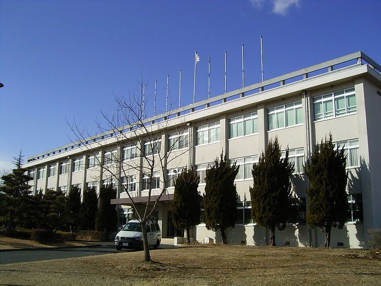

I study computer engineering in NIT, Tsuyama.
The image below is NIT, Tsuyama.

I'm in the Communication and Information Systems Program for 4 years.
My day in the life.
Morning
I usually get up at 8. I eat breakfast in Hokushin-Ryou.
After breakfast, I get ready for school. In the meantime, I often listen to music.
My favorite artists are...
My favorite song of ずっと真夜中でいいのに。 is 残機.
This song is a theme song for the anime チェンソーマン.
Lunch Time
I also eat lunch in Hokushin-Ryou. After lunch, I often relax in my room and talk with my friends until afternoon classes begin.
My friends and I often talk about smartphone games. The games I've been playing lately are...
I often go for a walk after school. I often go shopping at that time.
In between walks, we also play Pokémon GO or MONSTER HUNTER NOW.
Because, these games are location-based games. I play Pokémon GO for 6 years.
Night
After dinner, I often do my homework or study for Graduation Research.
The theme of my Graduation Research is Building a problem-solving environment using ifLink.